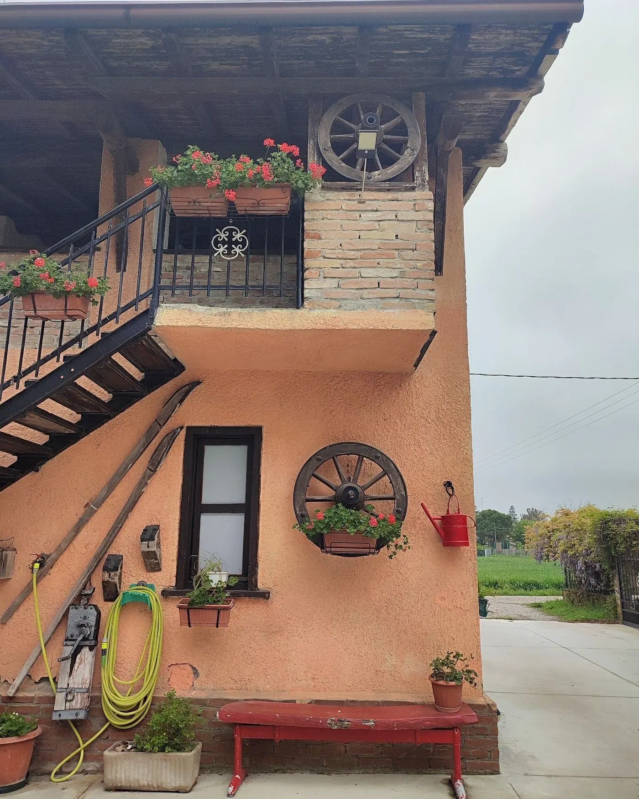
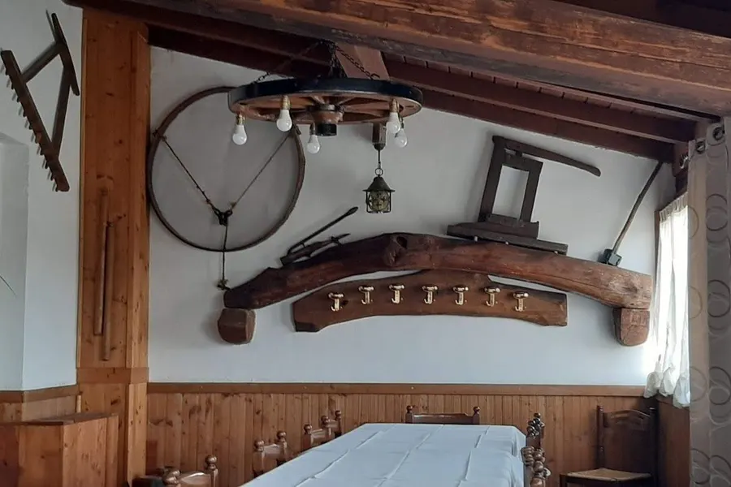
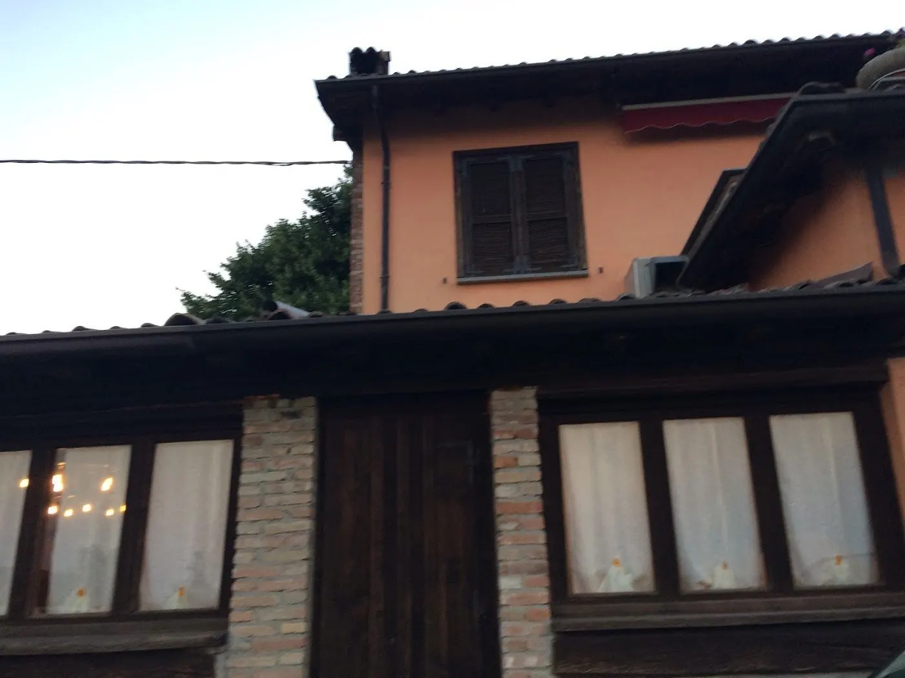
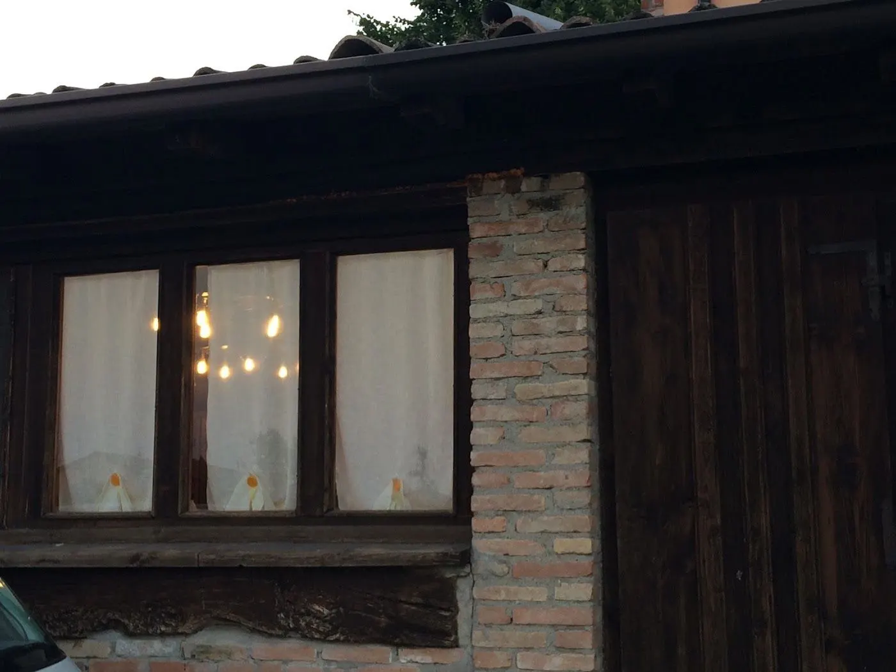

Tavolate
Compleanni, battesimi, pranzi tra amici: la sala è adatta e ci organizziamo anche per gruppi numerosi.
Sito dimostrativo
 Chiama
Chiama
Azienda agricola biologicaStrada Scortica 15 · VogheraSi mangia su prenotazione
La Scortia è una cascina che lavora: i campi intorno, il portico, la scala di legno con i gerani. Qui non c’è fretta: si arriva, si parcheggia in corte, ci si siede.





Compleanni, battesimi, pranzi tra amici: la sala è adatta e ci organizziamo anche per gruppi numerosi.
La corte, il portico, il prato: i bambini possono muoversi senza stare seduti tre ore.
Lo spazio non manca. Se arrivate in tanti, o con un camper, ditecelo al telefono.
Sì. La sala è adatta a compleanni, battesimi e tavolate, e fuori c’è la corte. Per i gruppi conviene chiamare con qualche giorno di anticipo.
In Strada Scortica 15, nella campagna di Voghera. All’ingresso trovi il cancello con il tettuccio di coppi e l’insegna di legno.
Sì, lo spazio non manca. Se arrivate in tanti, o con un camper, ditecelo al telefono.